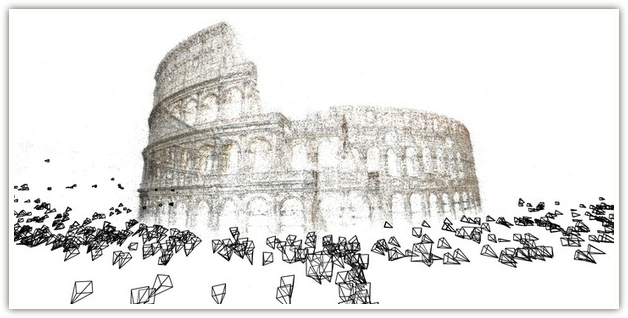

Friday, February 26th, 2010 2:57am

有些发明，能让近似领域的研究者在第一眼看到的时候就意识到「这一定可行」，然后就是纳闷「为什么我没想到」。我看到这则新闻的时候就是这种感觉（这里有中译）。
这是康奈尔大学计算机系的年轻科学家 Noah Snavely 的想法，说起来很简单：我们都知道在著名的建筑物周围会有大量游客以之为背景的照片，例如凯旋门或者自由女神像。因为这些照片都是从不同角度照过去的，所以只要照片足够多，那么利用这些 2D 的图像就能很好地还原出这些建筑物的 3D 结构来。这就使得研究者得以利用这些公开可以获得的数据生成这些建筑物的 3D 模型。用这个项目自己的话说，这叫做「在一天之内建成罗马」。
在此之前，微软也曾经推出过 Photosynth 的服务，允许用户利用自己的相册生成 3D 效果。但是与之相比，这个项目显然是一个 Web 2.0 的版本，所以能够实现的效果就要恢弘得多。它利用了公众的参与，有点像 Google Labeler。它会动员大家在特定建筑物的周围照相，然后把数据上传给它。但是计算部分是由它自己承担的。
我看完相关的报道之后立即的想法是：理论上来说，只要大多数人都有一台随时随地随身的照相设备──很显然这很快就会成为现实──那么假以时日，采用这个思路就可以把这个星球上每个有人群的角落都数字 3D 化，这是多么宏伟的一件事。
其次的想法是：这个项目太适合 Google 自己来做了，首先，Google 旗下的 Panoramio 现成就有无穷无尽的带有地理信息的图片资源可资利用；其次，Google 一直在推进 Google Earth 上的 3D 城市建设。目前 Google 的 3D 城市主要来自于 SketchUp 的绘制。很显然，与其让公众参与绘制建筑，直接上传图片要简单得多，而由客观的图片所生成的 3D 模型也比主观绘制出的 3D 模型更准确。至于计算资源，毫无疑问，这对 Google 来说完全不是问题。如果我是 Google 的雇员，我会忍不住从今天开始就把自己的 20% 时间投入这个项目的。
更进一步的想法是：在云计算时代，传统计算项目的两大瓶颈──数据资源和计算资源──都已几乎不是问题。廉价的计算资源已经变成公共设施可以随时购买，而只要项目的设计足够巧妙，源源不断的数据会被公众自己送上门来，有时还会附赠人脑资源加入。随着诸如智能手机（也许还包括平板在内）的移动设备的普及，任何一个人都可以是一个功能强大的智能输入终端，而一个拥有广泛参与的项目就等于随时都有无数无所不在的触角散布在世界各地。
而真正困难的问题，在于如何设计良好的算法能够从这些海量涌入的平凡数据中挖掘和构造出不平凡的结果来，就像本文所描述的这个例子一样。在这个数据远多于信息、信息又远多于知识的时代，这一点显得尤其重要极了。


{kind=link}